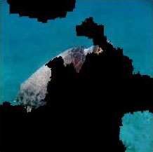

Why should I trust you? Local Interpretable Model-agnostic Explanations
This page's goal is to present a PostHoc feature attribution XAI methodology called LIME (Local Interpretable Model-agnostic Explanations) and demonstrate how it can be used to explain image classification tasks. You will be guided through the code and the results of the LIME algorithm. Part of this workshop will be some research questions that need to be answered by you. These questions can be found in the last part of the tutorials and you will encounter these questions with the TOSUBMIT tag. You will need to submit your answers to these questions in the form of a .pdf file on Canvas. The deadline for submitting your answers is the .. of June 2023.
Local Interpretable Model-agnostic Explanations
In this post, we will study how LIME (Local Interpretable Model-agnostic Explanations) ([1]) generates explanations for image classification tasks. The basic idea is to understand why a machine learning model predicts that a specific image belongs to a certain class (caretta our visual example). Briefly, this technique constructs a new simple model (for example a linear classifier) which is easy to be interpreted by humans and at the same time approximates the predictions of the black-box model in the neighborhood around the instance that needs to be explained (local faithfulness ).
The LIME explainer is model-agnostic which means is not restricted to a specific model and can be used to explain any black-box classifier. So we don’t need to have access to the details of our model (input, intermediate layers etc) to generate explanations. Moreover, the explainer is local meaning that it explains the prediction of the model in the neighborhood of the instance being explained. This technique lies in the PostHoc category of XAI methods, meaning that it explains the model after it has been trained.
Interpretable Representations
An interpretable explanation in an image classifier explainer should use a representation that is understandable to humans, by explaining which parts of the input image influence the model decision. For instance, the pixel-based representations are not very informative especially when we deal with huge images and therefore a better way to explain the model decision is to use super-pixels ([3]). Super-pixels are groups of pixels that share similar characteristics such as color and texture. Hence, a possible interpretable representation for image classification may be a binary vector indicating the presence or absence of a super-pixel.
Thus, our explainer needs to find a way to attribute importance to each super-pixel in the initial input image. It’s important to note here, that the interpretable representations are meant to be just for the LIME explainer while the black-box can still be trained using the original pixel-based representations.
LIME approach aims to just explain why the classifier took a specific decision upon a specific input image. It does not aim to explain the whole model. Authors, in the paper, proposed a mechanism called SP-LIME that aims to explain the whole model. While we will not touch this method in this tutorial we encourage you to have a look at it in the original paper.An interpretable explanation in an image classifier explainer should use a representation that is understandable to humans, by explaining which parts of the input image influence the model decision. For instance, the pixel-based representations are not very informative especially when we deal with huge images and therefore a better way to explain the model decision is to use super-pixels ([3]). Super-pixels are groups of pixels that share similar characteristics such as color and texture. Hence, a possible interpretable representation for image classification may be a binary vector indicating the presence or absence of a super-pixel.
Thus, our explainer needs to find a way to attribute importance to each super-pixel in the initial input image. It’s important to note here, that the interpretable representations are meant to be just for the LIME explainer while the black-box can still be trained using the original pixel-based representations.
LIME approach aims to just explain why the classifier took a specific decision upon a specific input image. It does not aim to explain the whole model. Authors, in the paper, proposed a mechanism called SP-LIME that aims to explain the whole model. While we will not touch this method in this tutorial we encourage you to have a look at it in the original paper.
LIME approach details
To explain how LIME works in detail we should introduce some definitions and maths 😎.
Hence, let $\mathbf{x} \in R^{d}$ denote the original vector representation of an instance being explained (in our case a vector with all pixels in the image), and we use $\mathbf{x}^{\prime} \in {0, 1}^d$ to denote a binary vector for its interpretable representation (super-pixels).
The LIME explainer is defined as (or explanation model) $g \in G$, where $G$ is a class of potentially interpretable models, such as linear models, decision trees etc. To keep things simple, in this tutorial, we will consider just linear classifiers. As not every $g \in G$ may be simple enough to be interpretable $\Omega(g)$ is defined as a measure of complexity (in juxtaposition with the interpretability) of the explanation $g \in G$. For example, for decision trees $\Omega(g)$ may be the depth of the tree, while for linear models, $\Omega(g)$ may be the number of non-zero weights. We define as $f: R^{d} \to R$ the black-box model that we would like to explain. In classification, $f(\mathbf{x})$ is the probability (or a binary indicator) that $\mathbf{x}$ belongs to a certain class.
We further use $\pi_{\mathbf{x}}(\mathbf{z})$ as a proximity measure between an instance $\mathbf{z}$ to $\mathbf{x}$, so as to define locality around $\mathbf{x}$. Finally, let $\mathcal{L}(f, g, \pi_{\mathbf{x}})$ be a measure of how unfaithful $g$ is in approximating $f$ in the locality defined by $\pi_{\mathbf{x}}$. To ensure both interpretability and local fidelity, they must minimize $L(f, g, \pi_{x})$ while having $\Omega(g)$ be as low as possible. This will keep the complexity of the explanation low while maintaining the fidelity of the explanation high.
Hence, the loss function for the LIME explainer is the following equation:
\[\xi(\mathbf{x}) = \mathcal{L}(f, g, \pi_{\mathbf{x}}) + \Omega(g)\]The above equation contains the tradeoff between local fidelity which is expressed by $L$ and the complexity of the explainer that it is expressed by $\Omega$.
The first term $\mathcal{L}(f, g, \pi_{\mathbf{x}})$ in the equation is represented by the weighted square loss:
\[\mathcal{L}(f, g, \pi_{\mathbf{x}}) = \sum_{\mathbf{z}, \mathbf{z}^{'}}\pi_{\mathbf{x}}(\mathbf{z})(f(\mathbf{z})- g(\mathbf{z}^{'}))^{2}\]with $\pi_{\mathbf{x}}$ to be a kernel function that measures the proximity of $z$ to $x$:
\[\pi_{\mathbf{x}} = \exp(-D(\mathbf{x},\mathbf{z})^{2}/\sigma*{2})\]The idea is that by tuning the weights $\mathbf{w}$ we can use them directly as a feature attribution to each super-pixel. The higher the weight that corresponds to a specific super-pixel the more important this super-pixel is for the prediction of the black-box model and vice-versa.
It’s important to remind you here of the terms faithfulness and local fidelity which are about how well our explainer $g$ can approximate the decision of the black-box model $f$ in the locality defined by $\pi_{\mathbf{x}}$.
The whole LIME algorithm can be summarized as follows:

The kernel shows the proximity between the instance that we desire to explain and the generated samples in the neighborhood. The neighborhood is created by sampling instances around the initial image. The sampling is done by perturbing the instance being explained. For example, in the case of images, we can perturb the image by zeroing out some super-pixels. The perturbed instances are then fed to the black-box model and the output is used to train the explainer. The weights of the interpretable model are then used to explain the prediction of the black-box model. Finally, in the algorithm, K-lasso refers to the regularization that is introduced in a previous equation and relates to the term $\Omega(g)$.
The above video explains the whole LIME process. The initial surface represents the black-box classifier and the regions for the class of interest (e.g. Caretta-caretta with the light-pink color). The dark red-colored dot denotes the sample that we would like to explain and it is an image with the label Caretta-caretta. The first step is to sample the neighborhood of the point $\mathbf{x}$ that we would like to explain. Several points are generated. The size of each generated sample and the transparency relates to the distance from the initial point $\mathbf{x}$ which is calculated based using $\pi_{\mathbf{x}}(\mathbf{z})$. The next step is to apply the black-box classifier $f()$ to find the label for each generated point. Samples with red represent the class Caretta-caretta while samples with purple represent the adversary class (not Caretta-caretta ;). The next step is to train the interpretable model $g()$ using the generated samples. The weights of the interpretable model are used to explain the prediction of the black-box classifier.
Code implementation
Firstly, we will need to import the required libraries. The code is written in Python 3.6.9 and PyTorch 1.7.0. You can access the code in google colab using the following link. Firstly, you should run the following command to install the necessary libraries:
conda env create -f my_lime.yml
conda activate my_lime
Imports
Now, having installed the necessary libraries we can import them. Throughout the whole tutorial, we will make use of The following libraries are used:
1
2
3
4
5
6
7
8
9
10
11
12
13
14
15
16
import matplotlib.pyplot as plt
from PIL import Image
import torch.nn as nn
import numpy as np
import os, json
import cv2
import torch
from torchvision import models, transforms
from torch.autograd import Variable
import torch.nn.functional as F
import copy
import sklearn
import sklearn.metrics
from sklearn.linear_model import LinearRegression
Initialization of a pre-trained VGG19 model
The very first thing that we will do is load a pre-trained VGG19 model. This model will be used to classify images and we will try to explain its behavior. The output of the model is a vector of 1000 probabilities belonging to each class from the ImageNet dataset. The model is initialized and the weights are loaded. The model is set to evaluation mode. The model is set to run on GPU if available. You can do that on Google colab by enabling the GPU option. The steps for that are the following: Edit -\> Notebook settings -\> Hardware accelerator -\> GPU. The code for all these steps is the following:
1
2
3
4
5
6
7
8
9
10
11
# load model
# model_type = 'vgg19'
model = models.vgg19(pretrained=True)
# run it on a GPU if available:
cuda = torch.cuda.is_available()
device = torch.device("cuda:0" if torch.cuda.is_available() else "cpu")
print('cuda:', cuda, 'device:', device)
model = model.to(device)
# set model to evaluation
model.eval()
Ignore for now the warnings! This code should return the architecture of the VGG19 model. Of course, feel free to choose the model of your choice (the code should work with any model). Now let’s load and process the image (for the VGG19 classifier) that we would like to test our LIME explainer. You can freely choose the image that you would like to explain.
1
2
3
4
5
6
7
8
9
10
11
12
13
def imread_img(file_name):
# read the image and convert it - Set your pathto the image
img = cv2.imread('caretta.png')
if (type(img) is np.ndarray):
img = cv2.resize(img, (224, 224))
img = img.astype(np.float32)
img = img[:, :, (2, 1, 0)]
print('img:', img.shape)
else:
print('image not found - set your path to the image')
return img
We do make use of the OpenCV library to read the caretta.png image from files/. You can check all the provided images or download one from the web.
Note that you could do the same by using torchvision datasets and transforms. We will show an example of that when we will use the LIME explainer for our lab exercise at the end of this tutorial.
Image pre-processing
As usual, we will need to normalize our input image. The normalization is done using the mean and standard deviation of the ImageNet dataset. The image is also transposed to the correct tensor format:
1
2
3
4
5
6
7
8
9
10
11
12
13
14
15
16
17
18
19
20
21
def pre_processing(obs, cuda):
# Students should transpose the image to the correct tensor format.
# Students should ensure that gradient for input is calculated
# set the GPU device
if cuda:
torch_device = torch.device('cuda:0')
else:
torch_device = torch.device('cpu')
# normalise for ImageNet
mean = np.array([0.485, 0.456, 0.406]).reshape([1, 1, 3])
std = np.array([0.229, 0.224, 0.225]).reshape([1, 1, 3])
obs = obs / 255
obs = (obs - mean) / std
# make tensor format that keeps track of gradient
obs = np.transpose(obs, (2, 0, 1))
obs = np.expand_dims(obs, 0)
obs = np.array(obs)
obs_tensor = torch.tensor(obs, dtype=torch.float32, device=torch_device)
return obs_tensor
We can do the same (resizing, normalization and conversion to tensor) by using the torchvision transform:
1
2
3
4
transform = A.Compose([
A.Resize(224, 224),
A.Normalize(mean=[0.485, 0.456, 0.406], std=[0.229, 0.224, 0.225]),
ToTensorV2()])
Then, the next that we will do is load the image and preprocess it. We will also check the prediction of the VGG19 model. Note that the prediction is correct (E.g. 33 and 34 are ‘caretta-caretta’ and ‘turtle’). The code is the following:
1
2
3
4
5
6
7
8
9
10
11
12
13
14
15
16
17
18
19
def predict(input, model, target_label_idx, cuda):
# Makes prediction after preprocessing image
# Note that output should be torch.tensor on cuda
output = model(input)
output = F.softmax(output, dim=1) # calc output from model
if target_label_idx is None:
target_label_idx = torch.argmax(output, 1).item()
index = np.ones((output.size()[0], 1)) * target_label_idx
index = torch.tensor(index, dtype=torch.int64)
if cuda:
index = index.cuda() # calc prediction
output = output.gather(1, index) # gather functionality of pytorch
return target_label_idx, output
input = pre_processing(img, cuda) # preprocess: image (normalise, transpose, make tensor on cuda, requires_grad=True)
print (input.shape)
label, output = predict(input, model, None, cuda)
print('output:', output)
print('output label:', label)
The following code helps you to get the label of the prediction. The label is the index of the class in the ImageNet dataset. The index is used to get the class name from the .json file. The .json file is available in the repository.
1
2
3
4
5
6
idx2label, cls2label, cls2idx = [], {}, {}
with open(os.path.abspath('imagenet_class_index.json'), 'r') as read_file:
class_idx = json.load(read_file)
idx2label = [class_idx[str(k)][1] for k in range(len(class_idx))]
cls2label = {class_idx[str(k)][0]: class_idx[str(k)][1] for k in range(len(class_idx))}
cls2idx = {class_idx[str(k)][0]: k for k in range(len(class_idx))}
LIME explanation
The following figure illustrates the basic idea behind LIME. The figure shows light pink and blue areas which are the decision boundaries for the classifier (for the VGG19 pre-trained model on ImageNet for instance). LIME can provide explanations for the predictions of an individual instance (the one with the dark red dot). These explanations are created by generating a new dataset of perturbations around the instance to be explained (in our image are depicted with dot circles around the initial instance).

Then, we apply our black-box model $g()$ and we can extract the label for all the perturbations (and can be seen with red that denotes turtle and purple that denotes non-turtle). The importance of each perturbation is determined by measuring its distance from the original instance to be explained (. These distances are converted to weights by mapping the distances to a zero-one scale using a kernel function ($\pi_{\mathbf{x}}$ ). All this information: the newly generated dataset, its class predictions and its weights are used to fit a simple model, such as a linear model (gray line), that can be interpreted. The coefficients for this model are extracted and used as the explanation for the prediction of the instance we want to explain. The higher the coefficient, the more important the feature is for the prediction.
Creating Perturbations of image
In the case of image explanations, our perturbations will be generated by zeroing out some of the superpixels in the image.
Extract super-pixels from the image
The superpixels are generated using the quickshift segmentation algorithm. This algorithm is provided by the skimage.segmentation library. It can be noted that for the given image, 68 superpixels were generated. That of course will change if you will update the quickshift parameters (kernel_size and max_dist). The code snippet can be found below:
1
2
3
4
5
6
7
8
9
10
11
import skimage.io
import skimage.segmentation
superpixels = skimage.segmentation.quickshift(img/255, kernel_size=6, max_dist=200, ratio=0.2)
num_superpixels = np.unique(superpixels).shape[0]
num_superpixels
imgplot = plt.imshow(skimage.segmentation.mark_boundaries(img/255, superpixels))
plt.axis('off')
plt.show()
The generated superpixels for the input Caretta-caretta image are shown in the image below. Note that you can improve the result of the approach or use another method for creating the superpixels.

Creating random perturbations
In this example, 14 super-pixels were used. However, for real-life applications, a larger number of super-pixels will produce more reliable explanations.
Having extracted the super-pixels, the way that perturbations are calculated is the following: Random
zeros and ones are generated and shaped as a matrix with perturbations
as rows and superpixels as columns. An example of a perturbation (the
first one) is shown below. Here,
1
1
1
0
1
2
3
4
num_perturb = 150
perturbations = np.random.binomial(1, 0.5, size=(num_perturb, num_superpixels))
perturbations[0] #Show example of perturbation
We can produce this sequence:
1
array([0, 0, 1, 0, 1, 0, 0, 0, 0, 0, 0, 0, 0])
The following function
1
perturb_image
1
img
1
perturbation
1
segments
1
2
3
4
5
def perturb_image(img,perturbation,segments):
active_pixels = np.where(perturbation == 1)[0]
mask = np.zeros(segments.shape)
#Add your code here
return perturbed_image
Let’s use the previous function to see what a perturbed image would look like:
1
skimage.io.imshow(perturb_image(img/255,perturbations[0],superpixels))

Step 2: Use ML classifier to predict classes of newly generated images
This is the most computationally expensive step in LIME because a prediction for each perturbed image is computed. Our aim is to construct a label for each pertubation. From the shape of the predictions, we can see for each of the perturbations we have the output probability for each of the 1000 classes.
1
2
3
4
5
6
7
8
9
10
11
12
13
14
15
16
predictions = []
for pert in perturbations:
perturbed_img = perturb_image(img,pert,superpixels)
input = pre_processing(perturbed_img, cuda)
# preprocess: image (normalise, transpose, make tensor on cuda, requires_grad=True)
output, label = predict(input, model, None, cuda)
output = model(input)
output = F.softmax(output, dim=1)
print (output.shape)
target_label_idx = torch.argmax(output, 1).item()
predictions.append(output.detach().numpy())
predictions = np.array(predictions)
predictions.shape
Then, we will need to calculate the distances between the perturbations and the original image. The distances are calculated using the cosine distance. The smaller the distance, the more similar the vectors are. The distances are then converted to weights using a kernel function.
1
2
3
original_image = np.ones(num_superpixels)[np.newaxis,:] #Perturbation with all superpixels enabled
distances = sklearn.metrics.pairwise_distances(perturbations,original_image, metric='cosine').ravel()
distances.shape
As we have shown before, after calculating the distances we need to apply kernels to use them in the loss function. The employed can is as follows:
1
2
3
kernel_width = 0.25
weights = np.sqrt(np.exp(-(distances**2)/kernel_width**2)) #Kernel function
weights.shape
Having calculated the proximity of each perturbation from the original image, as a final step we can calculate the explanation for our predictions. To do that, we will train the explainer using the generated perturbations. Finally, we will need to keep the five highest values in our calculated weights.
1
2
3
4
5
6
7
8
9
10
11
12
13
14
15
16
out = model(input)
print (out.shape)
out = F.softmax(out, dim=1)
out, indices= torch.sort(out, descending=True)
top_values = out[:, :5] # Keep the first 5 values from each row
top_indices = indices[:, :5] # Keep the corresponding indices
top5 = torch.topk(out, k=5)
topk_values = top_values.detach().numpy()
topk_indices = top_indices.detach().numpy()
print(topk_values)
print(topk_indices)
We can now train the linear model using the perturbations and the predictions with the highest probability. The extracted coefficients (or the explainer model weights) of the linear model are the explanations for the predictions.
1
2
3
4
simpler_model = LinearRegression()
#simpler_model.fit()
coeff = simpler_model.coef_[0]
coeff
We can now visualise the top features that the classifier used to make its prediction. The top features are the superpixels that have the highest coefficients.
1
2
3
num_top_features = 4
top_features = np.argsort(coeff)[-num_top_features:]
top_features
Having calculated the top features, we can now create a mask that will highlight the top superpixels in the image.
1
2
3
mask = np.zeros(num_superpixels)
mask[top_features]= True #Activate top superpixels
skimage.io.imshow(perturb_image(img ,mask,superpixels) )

Lab exercise TOSUBMIT
This part of the tutorial is a lab exercise where you will use LIME to debias a classifier. The goal is to understand how LIME can be used to explain the behavior of a classifier and how we can use this information to debias the classifier.
The classifier is trained to classify images of huskies and wolves. The classifier is a black-box $f(.)$ so we do not have access to its internal states. We have zero knowledge of the training dataset but also of the classifier’s architecture.
We hope that we will be able to identify the biases in the classifier and try to debias it using LIME explainer.
We will need to explain the behavior of the classifier using images from huskies and wolves. You should make use also the images that you can find on the Canvas page of the course or from google colab page. If you want you can use also your own husky and wolf images.
Firstly, we will load the classifier and the images we want to explain. The following code checks the performance of the classifier in a test set.
1
2
3
4
5
6
7
8
9
10
11
12
13
14
15
16
17
18
19
def check_accuracy(loader, model, device):
num_correct = 0
num_samples = 0
model.eval()
with torch.no_grad():
for x, y in loader:
x = x.to(device=device)
y = y.to(device=device)
scores = model(x)
_, predictions = scores.max(1)
print ("prediction "+ str(predictions) + " label " + str(y))
num_correct += (predictions == y).sum()
num_samples += predictions.size(0)
print(f'Got {num_correct} / {num_samples} with accuracy {float(num_correct)/float(num_samples)*100:.2f}')
Now we will load the classifier, load the images and check the performance of the classifier.
1
torch.load(model, 'model/hus_wolf_model.pth')
The following code loads the images and creates the dataloader. The dataloader is used to load the images in batches. The images are preprocessed using the same transformations that were used to train the classifier. Note that the following code is the same as the one used in the previous part of the tutorial for preprocessing images.
1
2
3
4
5
6
7
8
9
10
11
12
13
14
15
16
# create the transformation for all the images
transform = transforms.Compose([transforms.Resize(256),
transforms.RandomCrop(224),
transforms.ToTensor(),
transforms.Normalize([0.485, 0.456, 0.406], [0.229, 0.224,0.225])])
# Load the images
dataset = datasets.ImageFolder("data2/test/", transform=transform)
dataset.classes = ['husky','wolf']
dataset.class_to_idx = {'husky':0,'wolf':1}
dataset.samples = list(filter(lambda s: s[1] in [0,1], dataset.samples))
test_dataloader = torch.utils.data.DataLoader(dataset, batch_size=32)
# Check the accuracy of the classifier
check_accuracy(test_dataloader, model, device)
The expected result should be around 36% accuracy.
As a lab exercise, and by using the LIME algorithm established in previous cells, you should explain the behavior of the classifier. You should use the provided images in data/test/ folder. Add your conclusions about the model $f()$. What are the main problems with this classifier? Let’s discuss the results during the Werkcollege.
You should not trust me! TOSUBMIT
Now you feel like a hacker and you would like to fool LIME explanations by constructing adversarial classifiers. To do that we will follow the process that is described in the following paper [4]. You can find a detailed also explanation in the following video:

This part of the tutorial is the third part of the assignment you need to TOSUBMIT. The goal is to understand the limitations of LIME and how we can take advantage of them to perform adversarial attacks. The main focus is to understand the way that LIME generates samples (the perturbations and the distribution of the perturbations in comparison with the real data).
The setup is the following:
As an adversary hacker, you intend to deploy the biased classifier $f$ for making a critical decision (e.g., confusing huskies with wolves 😱) in the real world. The adversary must provide black-box access to customers and examiners, who may use post hoc explanation techniques to better understand $f$ and determine if $f$ is ready to be used in the real world. If customers and regulators detect that $f$ is biased, they are not likely to approve it for deployment. The goal of the adversary is to fool post hoc explanation techniques and hide the underlying biases of $f$.
In this assignment, check you need to illustrate the difference between the distribution of real samples and the perturbations. Find a way to illustrate that in an example of your choice.
Optionally, you should create a scaffolded classifier $e$ that behaves exactly like $f$ when making predictions on instances sampled from $X_{dist}$ (real samples) but will not reveal the underlying biases of $f$ when probed with leading post hoc explanation techniques such as LIME.
To do that you will need to follow the steps of the suggested paper. You need to find ways to differentiate the real data from the generated data and based on that create the scaffolded classifier $e$ that will fool LIME.
For this assignment, you will need to read the proposed paper and think of ways to perform adversarial attacks using the provided model. Add in your report an explanation of the procedure and the image with the difference between the 2 distributions. Optionally you can add examples of how the classifier $e$ can work in our case.
Guidelines for the Canvas submissions:
- You should prepare a report based on researching the TOSUBMIT from both notebooks.
- This report should contain three paragraphs. One will be about Integrated gradient and the questions that can be found at the end of the first notebook, one for the LIME explanations and finally one about adversarial attacks.
- Optionally, you should add one paragraph with the results of a scaffolding classifier that can fool LIME and some visual results with that.
Journal club for weeks 2 and 3
The papers for weeks 2 and 3 can be found on Canvas at the following links:
- https://arxiv.org/pdf/1711.11279.pdf
- https://openaccess.thecvf.com/content/CVPR2021/papers/Chefer_Transformer_Interpretability_Beyond_Attention_Visualization_CVPR_2021_paper.pdf
Mini-project ideas
This part of the tutorial relates to ideas about extending parts of this tutorial. One point of criticism of the LIME technique is the way that the perturbations are taking place since the distributions between real and generated data are significantly different. Think of ways to improve the gap (using alternative ways to perform perturbations).
- Think of ways to improve the feature repressions (replacing super-pixels).
- Another direction could be to come up with an evaluation scheme and perform a study comparing LIME, IG or other methods for explainable AI.
Conclusions
In this tutorial, we have analyzed LIME a posthoc XAI technique. An explanation of how this technique works but also step-by-step the code to implement it. We have also seen how we can use LIME to explain image classifiers but also how to identify the bias in a classifier.